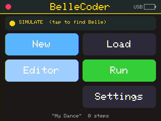
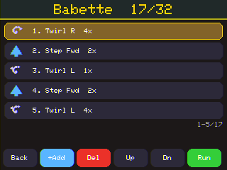
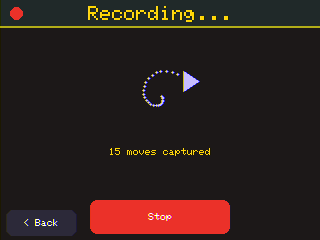
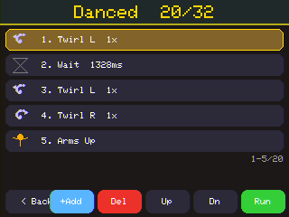
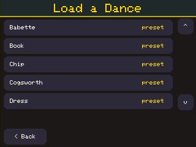
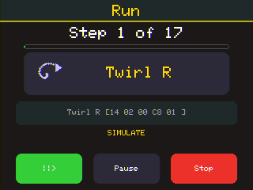
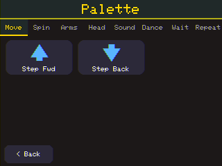
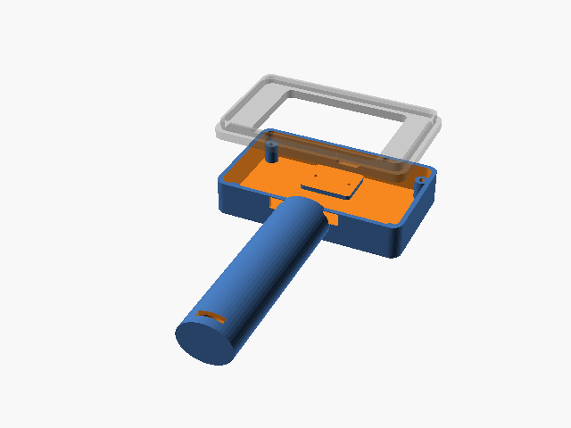

Program Belle's dances on a $12 touchscreen wand — or by dancing with it.
BelleCoder turns a Cheap Yellow Display (ESP32-2432S028R) into a standalone dance-programmer wand for the Hasbro Dance Code featuring Disney Princess Belle doll. Build dance sequences with big touch icons, capture a routine by physically waving the device, and stream it to Belle over Bluetooth — replacing the discontinued Hasbro app. Always paired, never expires, no phone or tablet needed.
Plug the CYD in over USB, click Install, and choose its serial port. Flashing takes ~1 minute and erases the device. Presets ship with the install.
Target: the 2.8" ESP32 CYD (ESP32-2432S028R,
ILI9341, resistive touch). If the colours look off after flashing, you're likely on a dual-USB
variant — that's a one-line compile flag (CYD_INVERT_DISPLAY) in the source.
It boots straight into the editor in SIMULATE mode — no doll required to try it.








It boots into the editor in SIMULATE mode, so you can build and run dances with no doll present — every command is logged. Once Belle's BLE timing is tuned on a real doll, a one-line flag streams the real commands. The whole doll protocol was reverse-engineered from the original app; see the repo for the write-up.
Source, hardware guide & the reverse-engineering write-up: github.com/JamesDavid/BelleCoder · Interoperability project for a toy we own.